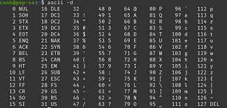

Het binaire stelsel is een taal in de wereld van computers en digitale technologieën. Deze taal bestaat uit getallen dat uit slechts twee cijfers gebruikt, namelijk 0 en 1. Dit in tegenstelling tot het decimale stelsel dat we in ons dagelijks leven gebruiken, waarin we tien cijfers hebben, van 0 tot 9.
In het binaire stelsel worden getallen opgebouwd door combinaties van nullen en enen, waarbij elke positie in het getal een macht van 2 vertegenwoordigt. Bijvoorbeeld: 0 in het binaire stelsel is gelijk aan 0 in het decimale stelsel. 1 in het binaire stelsel is gelijk aan 1 in het decimale stelsel. 10 in het binaire stelsel is gelijk aan 2 in het decimale stelsel. 11 in het binaire stelsel is gelijk aan 3 in het decimale stelsel. 100 in het binaire stelsel is gelijk aan 4 in het decimale stelsel. Het binaire stelsel is de basis van de werking van computers. In een computer worden alle gegevens, inclusief tekst, afbeeldingen, geluiden en programma's, intern vertegenwoordigd als reeksen nullen en enen. Deze nullen en enen worden verwerkt door elektronische schakelingen, die in staat zijn om complexe berekeningen uit te voeren door verschillende binaire getallen met elkaar te manipuleren.

Een van de voordelen van het binaire stelsel in computers is de eenvoud van elektronische schakelingen. Elektronica kan gemakkelijk de aan- en uittoestanden van schakelingen beheren, wat overeenkomt met de binaire 0 en 1. Dit maakt het mogelijk om informatie snel en efficiënt te verwerken. Bovendien maakt het binaire stelsel het gemakkelijk om gegevens digitaal op te slaan en te communiceren. Alles wat we op onze computers zien, horen en lezen, is terug te voeren op het gebruik van het binaire stelsel.
Kortom, het binaire stelsel is de taal van computers en digitale technologieën. Het vormt de ruggengraat van de moderne informatietechnologie en is een cruciaal concept voor iedereen die geïnteresseerd is in de werking van computers en digitale systemen.
Bits en bytes zijn fundamentele eenheden van digitale informatieopslag en -overdracht in computers en andere digitale systemen.
Bit (Binary Digit): Een bit is de kleinste eenheid van digitale informatie. Het kan slechts twee waarden aannemen, namelijk 0 of 1. Bits vormen de basis van het binaire stelsel, waarin computers gegevens opslaan en verwerken. Elke schakelaar in een computerchip kan in een van deze twee toestanden staan, wat wordt vertaald naar nullen en enen in de digitale taal. Bits worden vaak gebruikt om de status van een enkele schakelaar, zoals aan/uit of waar/onwaar, te vertegenwoordigen.

Byte: Een byte is een grotere eenheid van digitale informatie, bestaande uit acht bits. Dit geeft een breder scala aan mogelijke waarden, aangezien elk van de acht bits onafhankelijk kan worden ingesteld op 0 of 1. Een byte kan dus in totaal 256 verschillende waarden vertegenwoordigen (2^8). Bytes worden vaak gebruikt om individuele tekens, zoals letters, cijfers en symbolen, in tekst te coderen. Bijvoorbeeld, het karakter 'A' wordt gerepresenteerd door de byte 01000001 in de ASCII-tekencodering.
Bytes worden ook vaak gebruikt om de grootte van gegevensbestanden en computergeheugen aan te geven. Bijvoorbeeld, een bestandsgrootte van 1 kilobyte (KB) komt overeen met 1024 bytes, en 1 megabyte (MB) komt overeen met 1024 kilobytes, enzovoort.
In het kort, bits en bytes zijn de bouwstenen van digitale informatie en spelen een essentiële rol in de werking van computers en digitale technologieën. Bits vertegenwoordigen de kleinst mogelijke eenheden van informatie, terwijl bytes een grotere eenheid zijn die vaak wordt gebruikt om tekens en gegevenshoeveelheden te coderen en meten.
Een ASCII-tabel, ook wel bekend als een ASCII-tekentabel, is een tabel die de ASCII (American Standard Code for Information Interchange) tekencodering weergeeft. ASCII is een veelgebruikte tekencodering die wordt gebruikt om tekens, cijfers, leestekens en speciale symbolen om te zetten in binaire getallen die computers kunnen begrijpen. ASCII wordt veel gebruikt in computers en communicatiesystemen om tekst en andere gegevens weer te geven en uit te wisselen. Een typische ASCII-tabel bevat 128 vermeldingen (0 tot 127) die elk een specifiek teken of symbool vertegenwoordigen. De eerste 32 tekens (0 tot 31) in de ASCII-tabel zijn zogenaamde niet-afdrukbare tekens en omvatten bijvoorbeeld de Enter-, Tab- en Carriage Return-tekens, die worden gebruikt voor tekstverwerking en besturing van de cursor op een computer. De overige 96 tekens in de ASCII-tabel omvatten afdrukbare tekens, zoals letters (zowel hoofdletters als kleine letters), cijfers, leestekens (bijvoorbeeld komma's, punten en aanhalingstekens) en speciale symbolen (bijvoorbeeld het $-teken of het @-teken). Hier is een beknopte weergave van enkele veel voorkomende ASCII-tekens en hun bijbehorende decimale waarden: A: 65 a: 97 0: 48 $: 36 @: 64 Enter: 13 Tab: 9 !: 33 &: 38 Een ASCII-tabel is handig voor programmeurs, systeembeheerders, en iedereen die met tekstverwerking en gegevensuitwisseling op computers werkt. Het stelt hen in staat om de decimale waarden van tekens op te zoeken en om te zetten tussen de ASCII-codering en tekstuele weergave, wat nuttig is bij het begrijpen en manipuleren van tekstuele gegevens in verschillende computeromgevingen.
